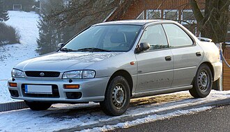
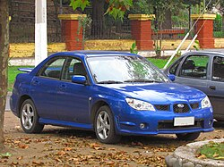
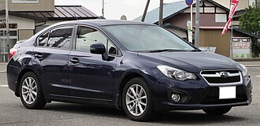
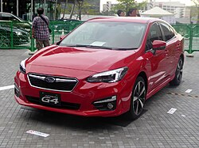
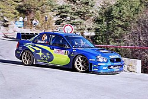

Back to main
Subaru Impreza — седан, универсал, купе или хетчбэк японской фирмы Subaru, выпускается с 1992 года. Impreza появилась после снятия с производства популярной модели Subaru Leone/Loyale с устаревшими двигателями серии EA. Impreza стартовала с двигателями серии EJ, которые уже стали популярными в старшей модели, Subaru Legacy. Модель Impreza существует в пяти поколениях.
I поколение

Изначально Impreza предлагалась в трёх четырёхдверных модификациях (седан LX, седан GX и хэтчбек GX). LX оснащалась 1,6-литровым 16-клапанным четырёхцилиндровым оппозитным двигателем мощностью 66 кВт, а остальные — 1,8-литровым двигателем мощностью 76 кВт. Коробки передач были на выбор двумя (пятиступенчатая механическая или четырёхступенчатая автоматическая), а полный привод был доступен для моделей GX. В начале 1994 года появился культовый WRX.
II поколение

В 2000 году появилась Subaru Impreza второго поколения. Автомобиль имел версии с кузовами седан и универсал (купе исчезло из модельного ряда).
В октябре 2001 года был представлен новый спортивный седан Impreza AWD MY02 с двигателем 2,5 л мощностью 112 кВт. Обновлённая модель включала в себя усиленные элементы передней подвески, усиленные стойки, пороги и двери, улучшенные тормоза, перенесенную радиоантенну и слегка обновленную приборную панель.
В ответ на распространённую критику в адрес Impreza II поколения за то, что она была слишком тяжёлой, медленной и некрасивой, Subaru отреагировала моделью Series II. Модели Impreza 2003 модельного года отличаются новым дизайном капота, фар, решетки радиатора, противотуманных фар, задних фонарей, зеркал заднего вида и бамперов, а также обновленной отделкой салона.
Система изменения фаз газораспределения увеличила мощность турбированного WRX до 168 кВт/300 Н·м. В остальном четырёхцилиндровые турбированные оппозитные двигатели STI 2.0 мощностью 92 кВт/184 Н·м, 112 кВт/223 Н·м и 195 кВт/343 Н·м остались практически прежними.
Повышение безопасности было достигнуто благодаря кодированию DataDot, удалению замков на всех дверях WRX и улучшенному центральному замку, а безопасность возросла благодаря активным подголовникам, откидным педалям тормоза и улучшенным бамперам.
III поколение

В 2007 году вышла Subaru Impreza III поколения. На автомобильном рынке России данная модель была представлена в кузове хетчбэк с моторами 1,5 и 2 литра. Но в дальнейшем исходя из маркетинговых соображений коллективом Subaru в линейку кузовов Impreza был добавлен седан. В Россию седан поставляется лишь с мотором 1,5 л.
IV поколение

Четвертое поколение модели Subaru Impreza выпускается в Японии с 2011 года с кузовами седан и хетчбэк. Первоначально автомобиль поставлялся на российский рынок, но из-за низкого спроса в 2014 году его продажи были прекращены.
V поколение

Пятое поколение модели Impreza продается с 2016 года.
Subaru Impreza 2007 года получила отличные оценки в краш-тестах различных организаций. Другие модели текущего модельного ряда Subaru также получили отличные оценки.
Комитет Euro NCAP присудил Impreza награду в 2017 году за лучшие показатели безопасности в классе «Малый семейный автомобиль».
На автомобилях Subaru Impreza, подготовленных британской компанией Продрайв, было выиграно три личных титула чемпиона мира по ралли: Колин Макрей победил в 1995, Ричард Бёрнс в 2001 и Петтер Сольберг в 2003 годах. Также компания Subaru с моделью Impreza трижды первенствовала в зачете производителей чемпионата мира по ралли, с 1995 по 1997 год. На различных модификациях Subaru Impreza выиграно множество этапов чемпионата мира по ралли, в последний раз на Ралли Великобритании 2005 года.
Уход заводской команды Subaru из чемпионата мира сказался только на классе World Rally Car. В зачёте серийных автомобилей (PWRC) автомобили Subaru по-прежнему продолжали активно использоваться. На них становились чемпионами в сезонах 2003-2007 и 2011 года. В том числе побеждали на этапах PWRC «Импрезы» российской подготовки, команды «Успенский Ралли Техника». Шведский пилот Патрик Флодин выигрывал этапы «серийного чемпионата мира» в 2008, 2010 и 2011 годах, становился вице-чемпионом класса в 2010 и 2011 годах.

Impreza 2005 the best frfr
-me